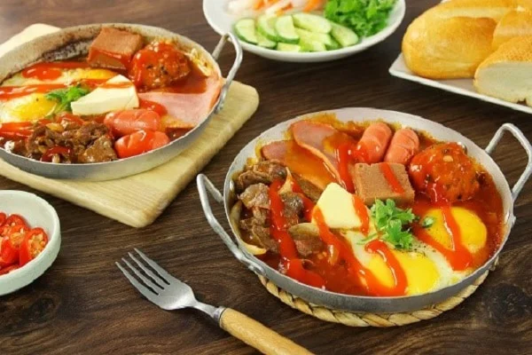

Banh Mi Op La Chao - Bread omelet

Description
Banh Mi Op La, Bread omelet in English, has become a familiar breakfast for many Vietnamese people, both delicious and extremely convenient to bring to school or work.
Instead of processing with simple eggs, you can change it with many other ingredients to make a unique and novel omelet. Fragrant crispy bread combined with greasy omelette with sausage, pate, always makes diners "fascinated" at first taste.
Ingredients
- Sausage: 1 piece
- Chicken eggs: 1 egg
- Tomatoes: 2
- Onion: 1/2
- Pate: 100gr
- Peanut butter: 20g
- Filtered water: 1 bowl
- Minced purple onion: 2 bulbs
- Minced garlic: 1 bulb
- Bread: 1-2 loaves
- Coriander
- Fresh chili
- Seasoning: Ketchup, soy sauce, salt, sugar, pepper
Steps
-
Pre-process materials
- Wash sausage, use a knife to cut into parallel diagonals to make the sausage more eye-catching when cooked.
- Wash and diced tomatoes. Cucumbers are also washed, sliced and eaten. Peeled onions cut into thin slices. Green onions, coriander, fresh chillies are washed thoroughly and cut off the roots.
-
Process materials
- Put the oil pan on the stove and wait for it to be hot, fry the sausages, stir them back and forth until the sausages are cooked evenly on all sides, then remove to a plate lined with greaseproof paper.
- Put the minced onion and garlic in the oil and fry until golden. Continue to add tomatoes with 2 tablespoons of filtered water, 3 tablespoons of ketchup, 1 tablespoon of soy sauce, 1/2 teaspoon of salt, 1 tablespoon of sugar and 1/2 teaspoon of pepper to the pan. Heat the tomato sauce over medium heat, using chopsticks to stir the mixture until the ingredients are well blended. When the mixture boils and thickens, reduce the heat. Stir for another 1-2 minutes to make the mixture smooth, taste and eat, then turn off the heat.
- Put another pan on the stove, add the onion and saute it with unsalted butter. Next, add pate, sausage to the pan and then crack the eggs. Wait until the eggs are cooked, drizzle tomato sauce on top, add a little pepper and coriander to make the dish more delicious.
-
Present And Enjoy
- Pan-fried bread must be presented beautifully and attractively. Tear off a piece of fragrant crispy bread served with omelette, fatty fragrant pate and crispy sausage mixed with smooth, sweet and sour sauce that will stimulate the taste buds immensely, making diners eat forever.
References
- Ingredients and Steps from here.
- Translated using Google Translate.